Cuel da la Ceit
NUOVO
Dal passo Avanza, salita per il cengione Sud e la cresta Sud-Est, discesa per versante Ovest
Il Navastolt è una bella cimetta rocciosa a picco su Pierabech, poco frequentata nonostante la via di salita non opponga difficoltà particolari. Basta leggere la relazione del Ravanatore per farsi venire voglia d'andarci; se poi si legge sul Castiglioni che la prima salita assoluta (*) è avvenuta il 19 agosto 1926 a firma di Antonio Berti, Severino Casara e Luisa Fantoni (sic!), allora non ci si può proprio astenere.
Partiamo da poco sotto il passo Avanza e superiamo la casera di Casa Vecchia, luogo davvero ameno. Sullo sfondo - per chi pensa solo alle crode - la dorsale delle Pale di Linc che si collega al Chiadin (percorribile con via persino segnata).
A proposito del Chiadin, mi intriga molto il percorso intuito e descritto da Italo de Candido in previsione della realizzazione dell'Anello di Sappada (da quel che so poi non se ne è fatto nulla purtroppo), di cui la metà della terza tappa collega appunto la malga di Casavecchia con il Chiadin passando per la sella fra Chiadin e M. Casaro. Un giorno bisognerà andare a vedere, anche perché avevo già puntato gli occhi sul monte Casaro, forse insignificante ma comunque interessante se visto dai piani del Cristo.
Il sentiero CAI che collega la casera di Casavecchia con la casera Avanza di là di sopra è pieno di schianti nella parte iniziale... peggio dei Sbrici! Continuiamo poi verso la forcella del Buso superiore constatando con amarezza che il sentiero CAI in lunghe parti è completamente sparito, assieme ai segni! Solo nella parte alta si conserva la traccia fra la pietraia.
In foto il villaggio minerario dell'Avanza; sbuca già il nostro monte.
Lassù, a metà parete, l'effimera linea della Cengia del Sole, su cui transiteremo qualche ora più tardi.
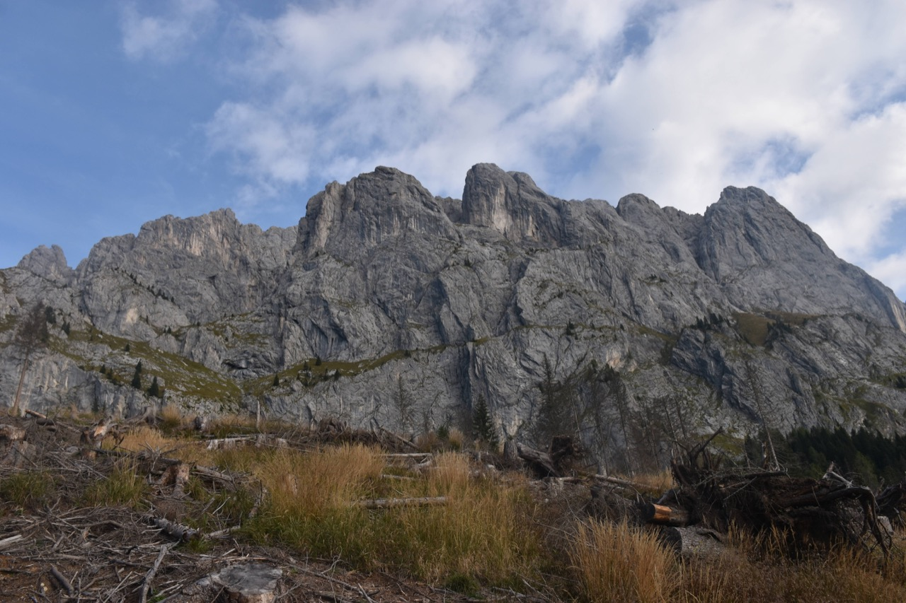L'ameno e solitario catino a Sud della forcella del Buso, luogo davvero bello.
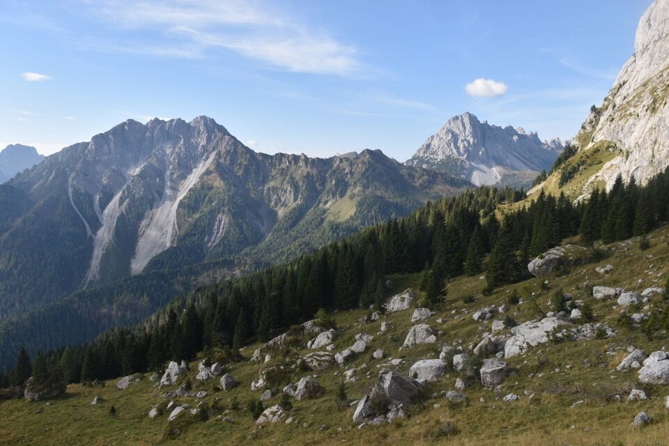C'avviciniamo alla croda.
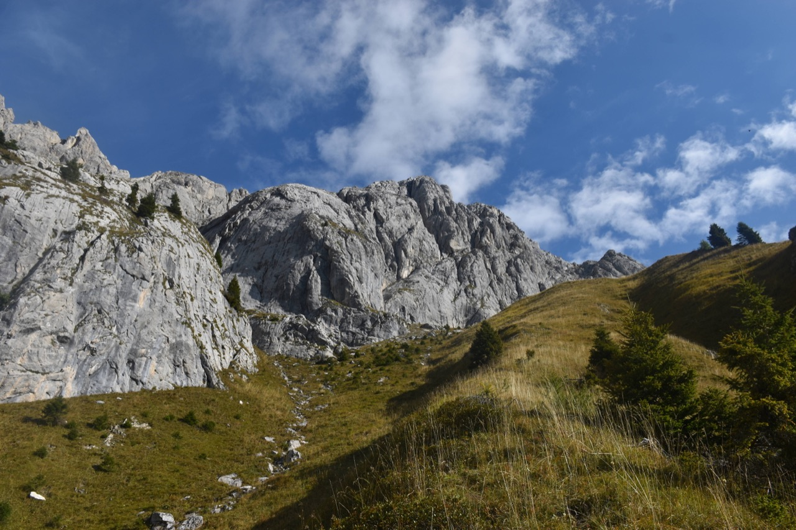La via non è obbligata e il percorso in roccia mi esalta.
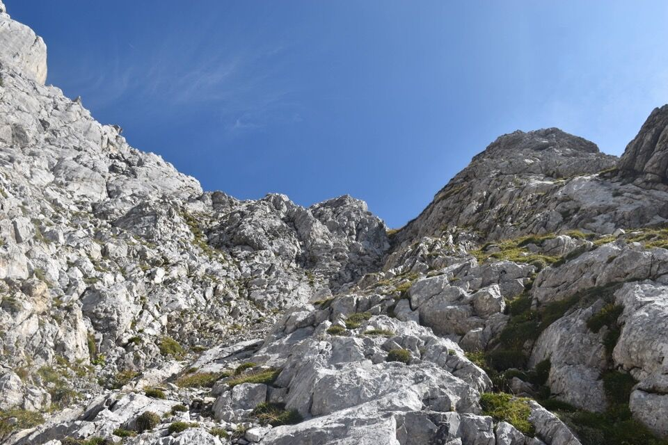Su una antecima hanno posto una croce, da dove si domina Pierabech (notare lo stabilimento della Goccia di Carnia laggiù).
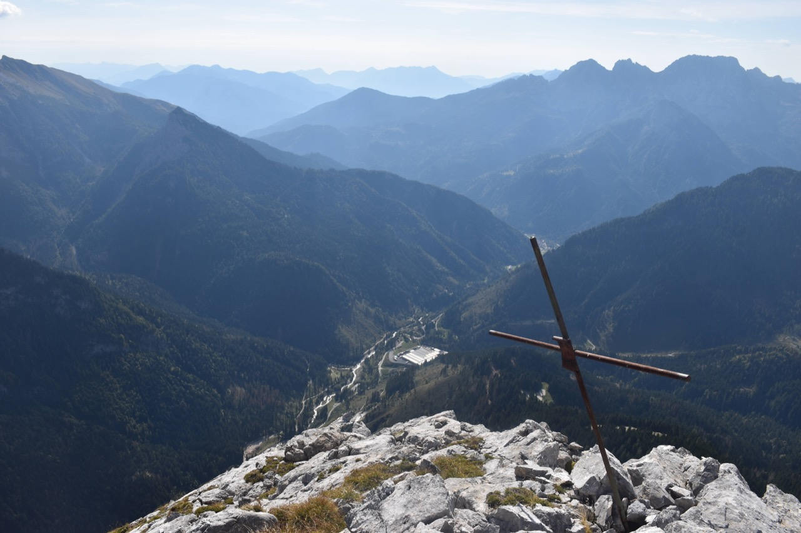Visione stratosferica sulle valli Fleons e Sissanis, col bellissimo pascolo di casera Sissanis di sotto.
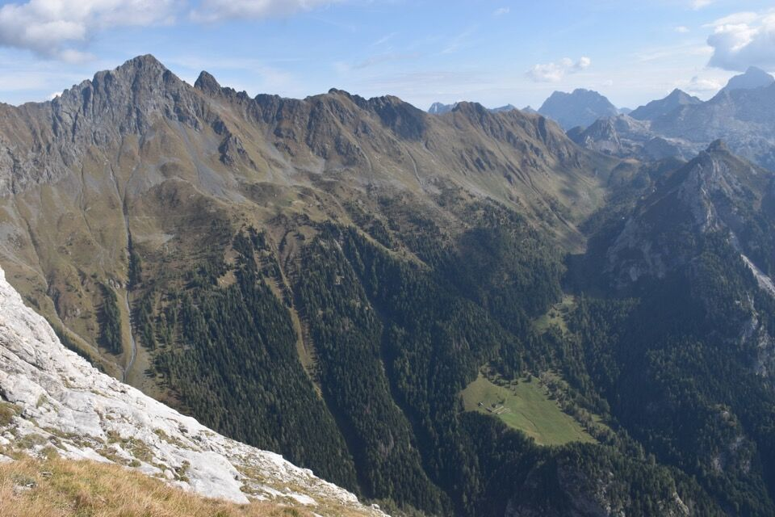
L'area cresta che ci aspetta: qualche passo esposto e qualcosina di II, ma mai difficile - turbano solamente quei blocchi in bilico sulla cresta.
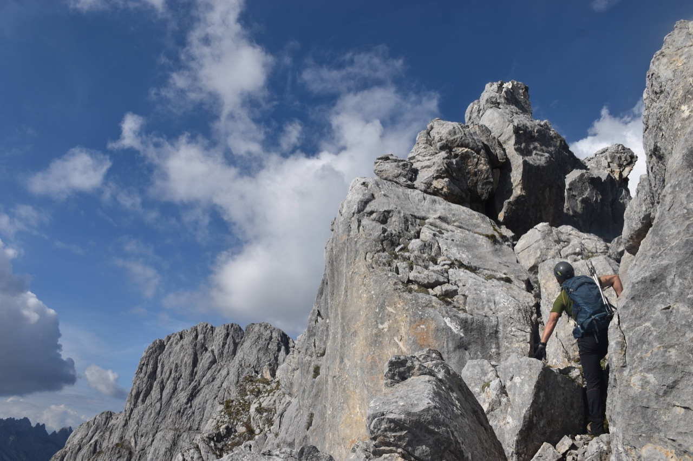Dalla cima del Navastolt verso la cima della Miniera.
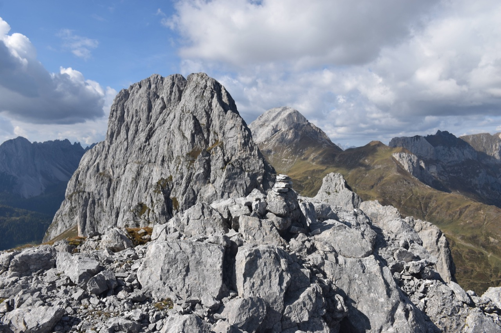Versante Ovest del monte Volaia, con dietro Cjanevate e Coglians.
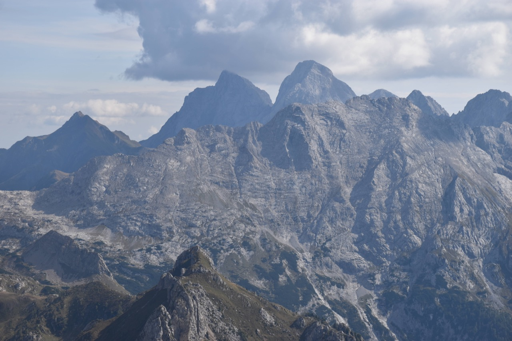Mi sono portato mezzo chilo di binocolo proprio per studiare l'attacco orientale della Cengia del Sole: è quello in foto, che da qui appare assai ostico e in effetti tanto semplice non è.
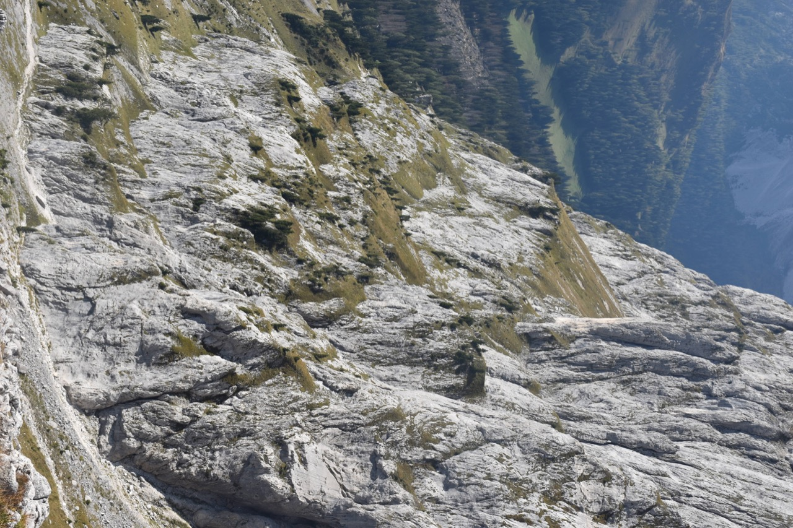Si scende per il versante Ovest, appoggiato ma disseminato di placche lisce: bisogna scendere per una scanalatura da non mancare assolutamente.
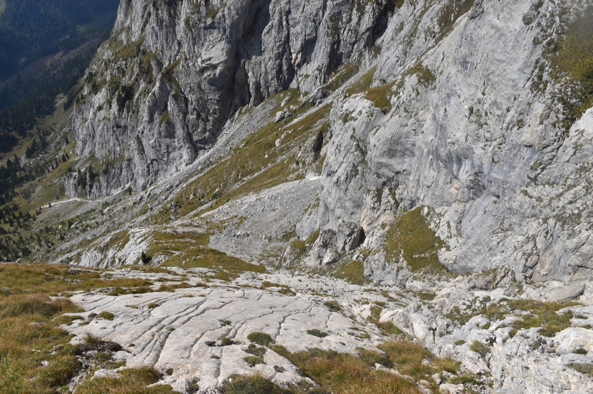Qualche passo molto ripido la rendono forse più delicata della cresta fatta in salita.
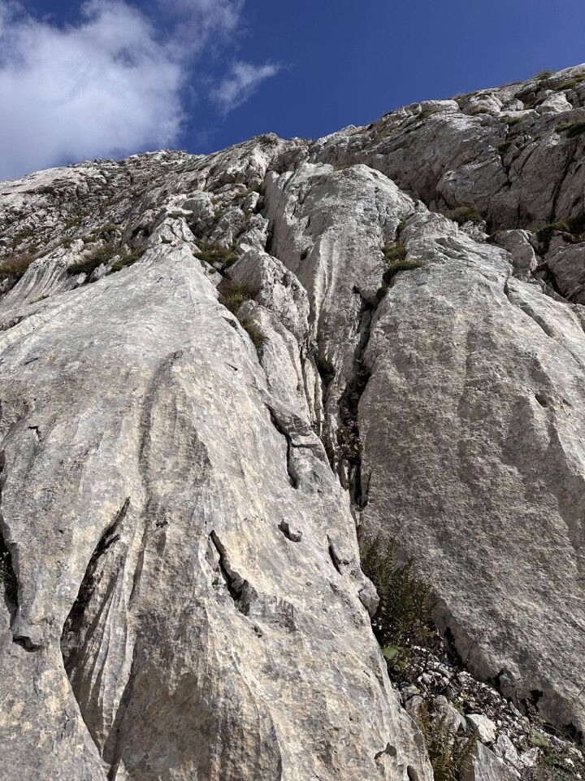 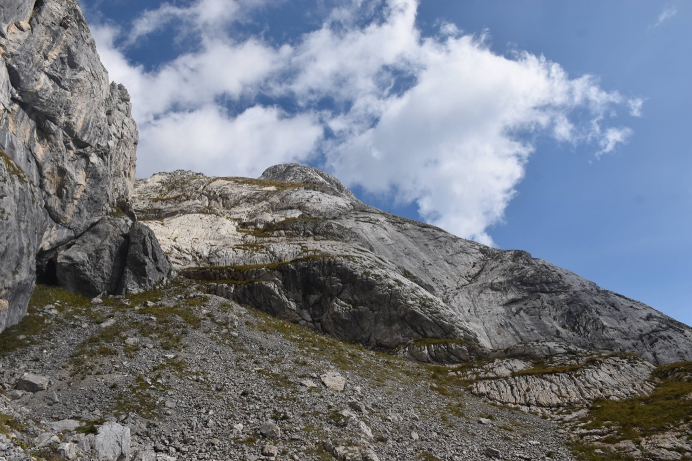Dopo il Navastolt siamo andati a percorrere la Cengia del Sole, a cui vi rimando.
Qui in foto il Navastolt (a dx) col versante di discesa; intriganti le caotiche crode della cima della Miniera, per non parlare delle arditissime torri della Crassigne dal Cramâr.
(*) Prima salita assoluta o prima salita alpinistica? Leggi il libro Controstoria dell'alpinismo di Andrea Zannini.